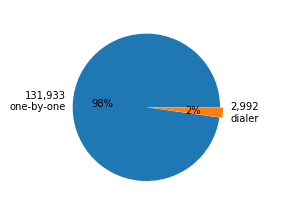
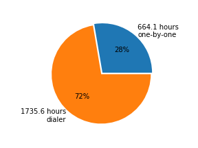

DVC volunteers made 134,925 calls (with a total duration of 2399.7 hours) on 184 days from Feb. 26th through Nov. 27th on behalf of 26 campaigns in 15 States.
DVC's phone bank was comprised of laptops that included a web browser, a skype connection, broadband internet access, and a headset. The laptops were configured so that volunteers could turn them on and almost immediately begin making calls. Personal cell phones were not used. We began operations on Feb. 26th with 12 laptops and added computers over time, reaching a peak of 80 by the week before the general election on Nov. 6th.
|
|
|
|
One-by-one calls (131,933 out of 134,925 or 98%) were made by clicking on links (each link corresponded to a phone number) in a web browser one at a time. The experience was much like making calls on a "normal" phone. Approximately 20% of these calls resulted in one of our volunteers speaking with a potential voter.
Dialer calls (2,992 out of 134,925 or 2%) were made by clicking on a link for a program that then dialed numbers automatically until someone picked up. When the volunteer was finished speaking with that potential voter, the process repeated until the volunteer decided to log out.
The number of calls made each day are shown below.
| Number of Calls (total 134,925 calls) | Duration of Calls (total 2399.7 hours) | |
|  |  |
| Number of Calls | Percent Calls | |||||||||||||||||||||||||||||||
|
| State | District | Candidate | Start | End | |
|---|---|---|---|---|---|
| 1 | AZ | 8 | Dr. Hiral Tiperneni | Mar 28 | Apr 24 |
| 2 | CA | 10 | Josh Harder | Mar 31 | Nov 6 |
| 3 | CA | 21 | T.J. Cox | Mar 31 | Nov 6 |
| 4 | CA | 22 | Andrew Janz | Mar 19 | Nov 6 |
| 5 | CA | 39 | Gil Cisneros | May 23 | Nov 6 |
| 6 | CA | 45 | Katie Porter | Nov 3 | Nov 6 |
| 7 | CA | 48 | Harley Rouda | Nov 5 | Nov 6 |
| 8 | CA | 49 | Mike Levin | May 23 | Jun 6 |
| 9 | CO | 16 | Tammy Story (State Senate) | Oct 19 | Oct 28 |
| 10 | CO | 24 | Faith Winter (State Senate) | Aug 1 | Oct 25 |
| 11 | FL | 26 | Debbie Mucarsel-Powell | Nov 2 | Nov 6 |
| 12 | GA | 4 counties | Inactive voter engagement | Aug 15 | Sep 13 |
| 13 | IN | 9 | Liz Watson | May 7 | May 20 |
| 14 | KY | 6 | Amy McGrath | Oct 21 | Nov 6 |
| 15 | MS | U.S. Senate | Mike Espy | Nov 11 | Nov 27 |
| 16 | NV | U.S. Senate | Jacky Rosen | Sep 21 | Nov 6 |
| 17 | NY | 24 | Dana Balter | Sep 30 | Oct 2 |
| 18 | OH | 12 | Danny Oconnor | Jul 9 | Aug 11 |
| 19 | PA | 18 | Conor Lamb | Feb 27 | Mar 13 |
| 20 | PA | 168 | Kristin Seale (State House of Reps.) | Sep 28 | Oct 25 |
| 21 | TX | 23 | Gina Ortiz Jones | Oct 18 | Oct 19 |
| 22 | TX | 24 | Collin Allred | Sep 15 | Sep 27 |
| 23 | TX | U.S. Senate | Beto O'Rourke | Sep 15 | Nov 6 |
| 24 | U.S. | Supreme Court | Reconsider nominee | Jul 9 | Jul 14 |
| 25 | WA | 3 | Dorothy Gasque | Jul 18 | Aug 1 |
| 26 | WI | Supreme Court | Rebecca Dallet | Apr 4 | Apr 14 |
The number of phone bank volunteers for the month before the election are shown below.